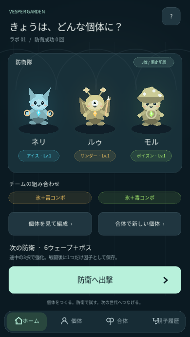
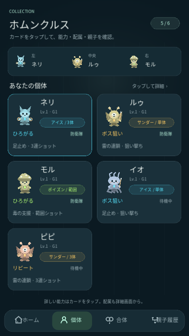
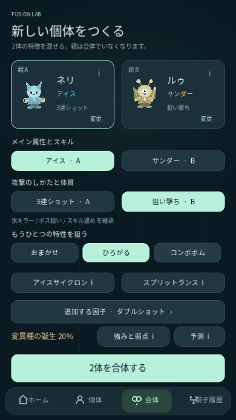
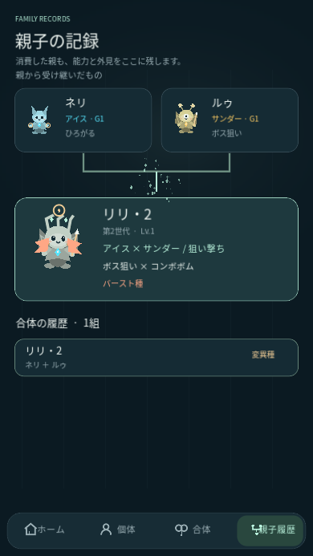
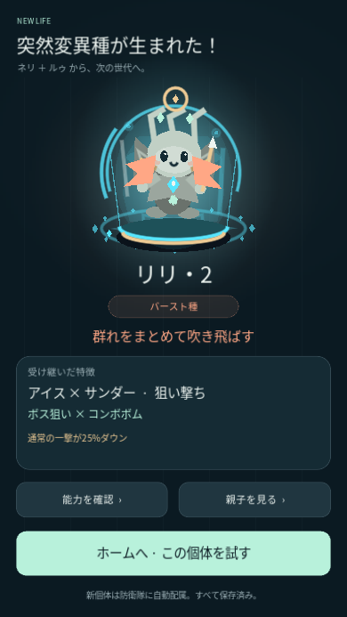
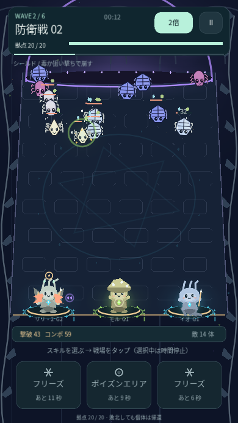

VESPER GARDEN
つくる。試す。次の世代へ。
ホムンクルスの特徴を混ぜて、新しい個体を防衛で試すゲーム。ホーム・個体・合体・親子履歴へUIを整理し、能力名をアイス・サンダー・ポイズンなどへ変更しました。合体では、強みと弱点のある突然変異種が確率で生まれます。
Android APKをダウンロード0.7.0 · 約57 MB · Android 7以降縦画面・タップ操作。OpenGL ES 3.0対応のARM64・ARMv7端末向け。前版に上書きしてセーブを引き継げます。
スマホに入れる
- 上のボタンをChromeなどで開き、APKを保存します。
- ダウンロード完了後、通知かファイルアプリからAPKを開きます。求められた場合、そのアプリに「不明なアプリのインストール」を許可します。
- 「Vesper Garden」をインストールして起動します。
アプリ内ブラウザで保存できない時はChromeで開いてください。セーブを引き継ぐ場合はアンインストールせず上書き更新します。ゲームはAPKをインストールして遊ぶ形式です。
今回の改修
- 4つの画面：ホーム、個体、合体、親子履歴を下部ナビで移動。カードをタップして役割・能力・配属を確認できます。
- 分かりやすい名前：アイス・サンダー・ポイズン、狙い撃ち・3連ショット・範囲ショット。説明は個別にタップできます。
- バースト種：通常攻撃が25%弱い代わりに、4回撃つと広い爆発。群れへの攻撃役になります。
- ミスト種：通常攻撃が40%弱い代わりに、氷と毒を広く長く届けるサポート役。変異種は合体時12〜20%、変異種の親がいると28%。確定の強化ではありません。
- 親子履歴：合体で消費した親の能力・外見もタップで確認。以前の記録で親の詳細が残っていない部分は名前を表示します。












一周の遊び方
ホームから3体で出撃 → 自動攻撃と手動スキルで防衛 → 2・4ウェーブの3択強化 → 6波の最後にボス → 成長と因子1つ抽出 → 親2体を合体 → 能力と親子履歴を確認 → 新個体で再出撃。戦闘右上で1倍／2倍を切り替えられます。
スキルの照準・3択・能力の説明中は時間停止。合体後も3体を残し、防衛を15秒以上続けると手持ち6体まで新しい個体を補充します。通信、登録、育成用の通貨は不要です。
確認できていること
PC上のGodotでスマホサイズのタップ操作を確認。防衛→因子抽出→確率での変異種誕生→消費した親の能力確認→新個体で次の防衛を実行しています。1,000回の合体、変異種の強みと弱点、旧セーブの移行、既存の倍速・合体・ボスをテスト。574項目の検証は失敗0。Android APKのビルド・署名・配布ファイルも照合済み。Android実機の起動と性能は未確認です。
開発署名のテストAPK。前版と同じパッケージ・署名で上書き更新できます。今回、ボスの行動調整と新しいキャラクター・VFX素材の適用は保留しています。